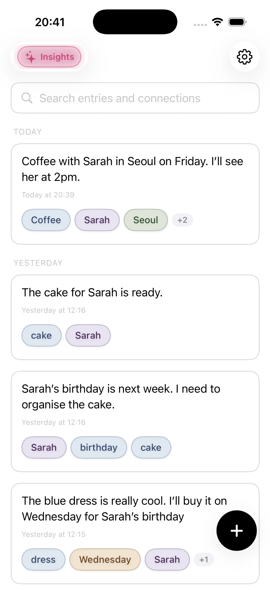

Capture anything
Write quick notes, ideas, observations, plans and snippets of everyday life in one low-friction place.
Notes without the filing
Onuri is a private notes app for iPhone for people who want to write, not organize. Take a note, capture an idea, keep study notes or record something worth remembering—without stopping to build folders and tags.
 On your computer?Scan with your iPhone
On your computer?Scan with your iPhoneAvailable on the App Store for iPhone.

Write quick notes, ideas, observations, plans and snippets of everyday life in one low-friction place.
Onuri recognizes people, places, dates and topics in your writing, helping related notes surface without manual links or folder maintenance.
Onuri uses no ads, trackers or third-party analytics. It is an iPhone app designed around private writing and personal iCloud sync.
Connected notes on iPhone
Onuri works for quick thoughts, study notes, meeting context, travel memories, book ideas, decisions, follow-ups and ordinary moments you may want to find again. You do not need to decide which folder each note belongs in before you write it.
Full-text search is there when you remember a phrase. Automatic connections give you another route when you remember a person, place, date or topic instead. The two approaches work together, so older notes can remain useful as your archive grows.
A folder can be useful when a note has one obvious home. Real-life notes often overlap: one entry can involve a friend, a city, a project and a future date at the same time. Onuri keeps the original note intact and recognises those pieces of context, letting the same writing be rediscovered from several directions.
Learn more about folderless notes, the Onuri notes app for iPhone, or how automatic connections work.
One note, four ways back
Take one ordinary note: “Dinner with Priya at Lucia’s in Lisbon. She recommended the book Piranesi. Back in March?” Months later, any of these routes returns it.
Tap Priya and see this dinner alongside every other note that mentions her.
Filter by Lisbon to gather everything from the trip, including notes written on different days.
Remember it was spring? Dates and times are recognised, so the note sits with others from that period.
Type “Piranesi” into search. If you only remember “that book Priya mentioned”, related entries surface notes with a similar meaning.
People, places, dates, times and topics that Onuri recognises in your text. Each becomes a filter, and terms that often appear together show up as connected terms.
No. Recognition happens on your iPhone as you write. You never need to add tags or links by hand.
No. Your note stays exactly as you wrote it. Connections are a way of finding it, not an edit to it.
Onuri keeps the experience simple: capture what matters, let useful context connect itself, and come back through search when you need it.
On your computer?Scan with your iPhone